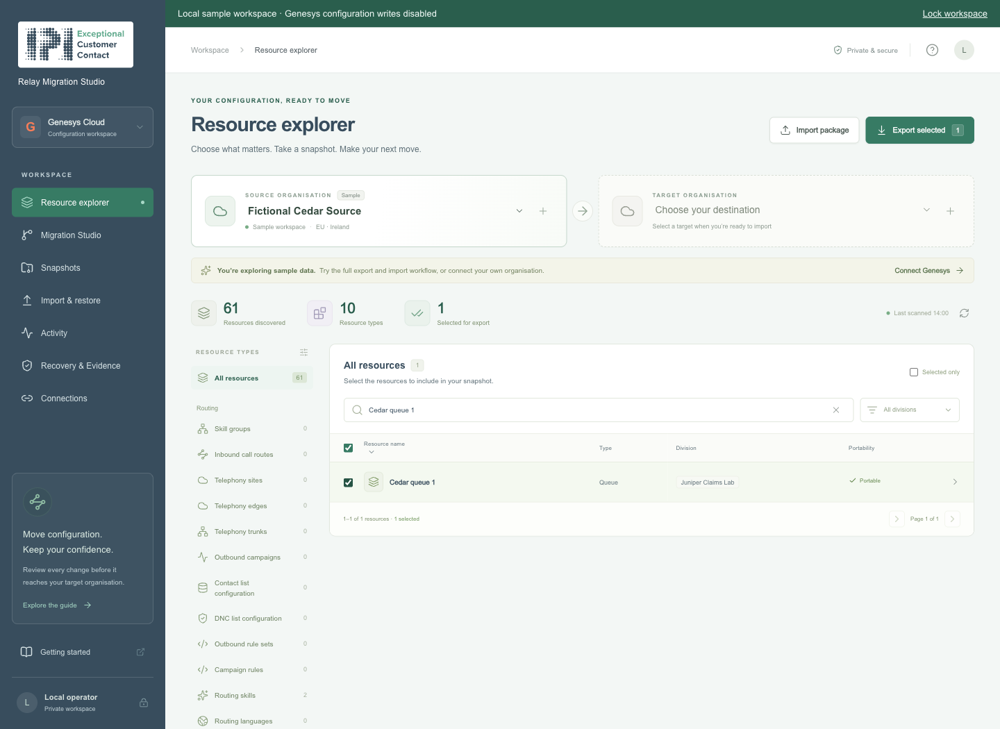

01 / PRODUCT WALKTHROUGHRelay Migration Studio
Choose a source, inspect configuration and dependencies, and make the destination explicit. See how reviewed Plans, retained receipts and independent readback keep migration evidence clear.
- Source & scope
- Dependencies
- Destination & review
- Verification